Manual:All workbenches at a glance/es
- Introducción
- Descubriendo FreeCAD
- Trabajar con FreeCAD
- Guiones en Python
- La comunidad
Como ya se mencionó, FreeCAD ofrece varios entornos de trabajo, cada uno dedicado a diferentes aplicaciones. Si bien, la multitud de opciones puede parecer abrumadora al principio, cada entorno está diseñado para tareas específicas, lo que optimiza el flujo de trabajo y lo adapta a los requisitos de cada proyecto. Por ejemplo, el entorno de Diseño de Piezas es ideal para crear y modificar modelos 3D sólidos, mientras que el entorno de Dibujo es perfecto para el dibujo y el diseño en 2D. Este enfoque modular permite a los usuarios personalizar su interfaz y conjunto de herramientas según sus necesidades y preferencias.
En esta página encontrará información sobre el conjunto básico de entornos de trabajo y sus funcionalidades. Para obtener información adicional, consulte la página correspondiente para cada workbench en la documentación de FreeCAD, donde encontrará una lista más completa.
Una característica interesante de FreeCAD es la posibilidad de obtener información adicional al pasar el ratón por encima de un comando. Esta función de información emergente ayuda a los usuarios a comprender qué hace cada comando, proporcionando orientación y facilitando el aprendizaje y la navegación por el software.
{kind=link}
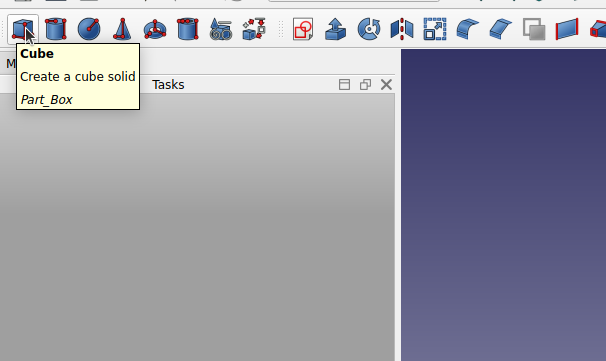
Cuatro de los entornos de trabajo están diseñados para funcionar en parejas, con uno totalmente integrado en el otro: BIM contiene todas las herramientas de dibujo y Diseño de piezas incluye todas las herramientas del banco boceto. Sin embargo, para mayor claridad, se muestran por separado a continuación.
Pieza
El  Part Workbench ofrece herramientas fundamentales para trabajar con piezas sólidas, incluyendo formas fundamentales como cubos y esferas, así como operaciones geométricas y booleanas básicas. Como enlace principal con OpenCasCade, el Part Workbench constituye la piedra angular del sistema de geometría de FreeCAD, ya que casi todos los demás entornos de trabajo generan geometrías basada en Part. Este sistema de modelado paramétrico permite un control y modificación precisos de los modelos 3D mediante un flujo de trabajo basado en el historial. Los usuarios pueden construir y refinar diseños complejos apilando y ajustando formas y operaciones más simples, lo que garantiza un proceso de diseño robusto y flexible.
Part Workbench ofrece herramientas fundamentales para trabajar con piezas sólidas, incluyendo formas fundamentales como cubos y esferas, así como operaciones geométricas y booleanas básicas. Como enlace principal con OpenCasCade, el Part Workbench constituye la piedra angular del sistema de geometría de FreeCAD, ya que casi todos los demás entornos de trabajo generan geometrías basada en Part. Este sistema de modelado paramétrico permite un control y modificación precisos de los modelos 3D mediante un flujo de trabajo basado en el historial. Los usuarios pueden construir y refinar diseños complejos apilando y ajustando formas y operaciones más simples, lo que garantiza un proceso de diseño robusto y flexible.
| Tool | Description | Tool | Description |
|---|---|---|---|
| Crea una caja. | Crea un cilindro. | ||
| Crea una esfera. | Crea un cono. | ||
| Torus | Crea un toroide (anillo). | Tube | Crea un tubo. |
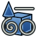 Create primitives |
Crea diversas primitivas geométricas paramétricas. | 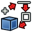 Shape builder |
Crea formas más complejas a partir de formas primitivas. |
| Extruye las caras planas de un objeto. | Revolve | Crea un sólido haciendo girar otro objeto (no sólido) alrededor de un eje. | |
| Mirror | Refleja el objeto seleccionado en un plano de simetría determinado. | 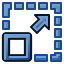 Scale |
Escala la forma seleccionada. |
| Fillet | Filetea (redondea o suaviza) los bordes de un objeto. | Bisela los bordes de las aristas de un objeto. | |
| MakeFace | Crea un rostro a partir de un boceto. | 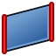 Ruled Surface |
Crea una superficie reglada entre las curvas seleccionadas. |
| Loft | Lofts de un perfil a otro. | Sweep | Recorre uno o más perfiles a lo largo de una ruta. |
| Section | Crea una sección intersectando un objeto con un plano de sección. | CrossSections | Crea múltiples secciones transversales a lo largo de un objeto. |
| Offset | Crea una copia a escala del objeto original. | Thickness | Asigna un grosor a las caras de una forma. |
| Project on Face | Proyecta una forma en una cara. | Color Face | Define un color para cada cara/superficie de un objeto. |
| Make Compound | Forma un compuesto de varias formas. | 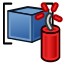 Explode Compound |
Descompone un elemento compuesto en sus formas. |
| Compound Filter | Filtra objetos compuestos en función de un parámetro (por ejemplo, volumen, área, otro objeto, etc.). | Realiza una operación booleana en dos objetos seleccionados. | |
| Corta (resta) un objeto de otro. | Fusiona (une) los objetos de pieza seleccionados en uno solo. | ||
| Common | Extrae la parte común (de intersección) de dos objetos. | JoinConnect | Conecta el interior de objetos empotrados en la pared. |
| JoinEmbed | Incrusta un objeto amurallado dentro de otro objeto amurallado. | 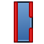 JoinCutout |
Crea un hueco en la pared de un objeto para otro objeto que también está en la pared. |
| Boolean Fragment | Calcula todos los fragmentos que pueden resultar de aplicar operaciones booleanas entre formas de entrada. | Slice apart | Divide las formas por intersección con otras formas. |
| Slice to compound | Divide las formas por intersección con otras formas. | Boolean XOR | Elimina la geometría compartida por un número par de objetos. |
| Comprueba la geometría en busca de errores. | Defeaturing | Elimina características de una forma. |
{kind=link}
{kind=link}
{kind=link}
{kind=link}
{kind=link}
{kind=link}
{kind=link}
{kind=link}
{kind=link}
{kind=link}
{kind=link}
{kind=link}
{kind=link}
{kind=link}
{kind=link}
{kind=link}
{kind=link}
{kind=link}
{kind=link}
{kind=link}
{kind=link}
{kind=link}
{kind=link}
{kind=link}
{kind=link}
{kind=link}
{kind=link}
{kind=link}
{kind=link}
{kind=link}
Diseño Piezas
El  PartDesign Workbench es una herramienta esencial para crear y modificar modelos 3D sólidos. Permite a los usuarios diseñar piezas complejas mediante el boceto de perfiles 2D y la posterior aplicación de diversas operaciones, como extrusiones, superficies de transición y revoluciones, para generar geometría 3D. Este entorno de trabajo también admite la creación de características como cavidades, agujeros, redondeos y chaflanes, proporcionando un conjunto completo de herramientas para el diseño detallado de piezas. Además, el Part Design Workbench se integra a la perfección con el Sketcher Workbench, lo que permite a los usuarios definir y restringir bocetos que sirven de base para los modelos 3D. Esta integración facilita un enfoque de diseño paramétrico, permitiendo ajustes y actualizaciones sencillas del modelo a lo largo del proceso de diseño.
PartDesign Workbench es una herramienta esencial para crear y modificar modelos 3D sólidos. Permite a los usuarios diseñar piezas complejas mediante el boceto de perfiles 2D y la posterior aplicación de diversas operaciones, como extrusiones, superficies de transición y revoluciones, para generar geometría 3D. Este entorno de trabajo también admite la creación de características como cavidades, agujeros, redondeos y chaflanes, proporcionando un conjunto completo de herramientas para el diseño detallado de piezas. Además, el Part Design Workbench se integra a la perfección con el Sketcher Workbench, lo que permite a los usuarios definir y restringir bocetos que sirven de base para los modelos 3D. Esta integración facilita un enfoque de diseño paramétrico, permitiendo ajustes y actualizaciones sencillas del modelo a lo largo del proceso de diseño.
| Tool | Description | Tool | Description |
|---|---|---|---|
| Extruye un objeto sólido a partir de un boceto seleccionado. | Crea un sólido haciendo girar un boceto alrededor de un eje. | ||
| Additive loft | Crea un sólido mediante la transición entre dos o más bocetos. | Additive pipe | Crea un sólido desplazando uno o más bocetos a lo largo de una trayectoria abierta o cerrada. |
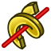 Additive helix |
Crea un sólido desplazando un boceto a lo largo de una hélice. | 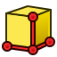 Additive box |
Crea una caja aditiva. |
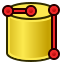 Additive cylinder |
Crea un cilindro aditivo. | Additive sphere | Crea una esfera aditiva. |
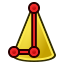 Additive cone |
Crea un cono aditivo. | Additive ellipsoid | Crea un elipsoide aditivo. |
| Additive torus | Crea un toroide aditivo. | 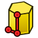 Additive prism |
Crea un prisma aditivo. |
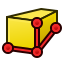 Additive wedge |
Crea una cuña aditiva. | Crea un vaciado a partir de un boceto seleccionado. | |
| Crea una función de agujero a partir de un boceto de círculo seleccionado. | Groove | Crea una ranura haciendo girar un boceto alrededor de un eje. | |
| Subtractive loft | Crea una forma sólida mediante una transición entre dos o más bocetos y la resta del cuerpo activo. | Subtractive pipe | Crea una forma sólida barriendo uno o más bocetos a lo largo de una trayectoria abierta o cerrada y la resta del cuerpo activo. |
| Subtractive helix | Crea una forma sólida barriendo un boceto a lo largo de una hélice y la resta del cuerpo activo. | Subtractive box | Agrega una caja sustractiva al cuerpo activo. |
| Subtractive cylinder | Agrega un cilindro sustractivo al cuerpo activo. | Subtractive sphere | Agrega una esfera sustractiva al cuerpo activo. |
| Subtractive cone | Agrega un cono sustractivo al cuerpo activo. | Subtractive ellipsoid | Agrega un elipsoide sustractivo al cuerpo activo. |
| Subtractive torus | Agrega un toroide sustractivo al cuerpo activo. | Subtractive prism | Añade un prisma sustractivo al cuerpo activo. |
| Subtractive wedge | Agrega una cuña sustractiva al cuerpo activo. | Boolean | Realiza operaciones booleanas en los objetos seleccionados. |
| Fillet | Aplica filetes (redondeos) en los bordes del cuerpo activo | Chamfer | Bisela los bordes del cuerpo activo. |
| Aplica inclinación angular a las caras de un objeto. | Thickness | Crea una gruesa capa a partir del cuerpo activo y abre la cara seleccionada. | |
| Mirrored | Transformación de espejo usando un plano o cara. | Crea un patrón lineal de determinadas características. | |
| Crea un patrón polar de determinadas características. | Permite crear un patrón con cualquier combinación de las demás transformaciones. |
{kind=link}
{kind=link}
{kind=link}
{kind=link}
{kind=link}
{kind=link}
{kind=link}
{kind=link}
{kind=link}
{kind=link}
{kind=link}
{kind=link}
{kind=link}
{kind=link}
{kind=link}
{kind=link}
{kind=link}
{kind=link}
{kind=link}
{kind=link}
{kind=link}
{kind=link}
{kind=link}
{kind=link}
{kind=link}
{kind=link}
{kind=link}
{kind=link}
Borrador
El  Draft Workbench está diseñado para crear y editar dibujos 2D. Ofrece una variedad de herramientas para el dibujo, incluyendo líneas, arcos, círculos y texto. Los usuarios también pueden realizar operaciones como recortar, extender y desplazar. El Draft Workbench es particularmente útil para dibujos arquitectónicos y puede utilizarse para crear geometrías 2D complejas que posteriormente se pueden transformar en modelos 3D. Se integra a la perfección con otros entornos de trabajo, proporcionando una base versátil para proyectos de diseño tanto 2D como 3D.
Draft Workbench está diseñado para crear y editar dibujos 2D. Ofrece una variedad de herramientas para el dibujo, incluyendo líneas, arcos, círculos y texto. Los usuarios también pueden realizar operaciones como recortar, extender y desplazar. El Draft Workbench es particularmente útil para dibujos arquitectónicos y puede utilizarse para crear geometrías 2D complejas que posteriormente se pueden transformar en modelos 3D. Se integra a la perfección con otros entornos de trabajo, proporcionando una base versátil para proyectos de diseño tanto 2D como 3D.
| Tool | Description | Tool | Description |
|---|---|---|---|
| Dibuja un segmento de recta entre 2 puntos. | Dibuja una línea quebrada formada por múltiples segmentos de recta (polilínea). | ||
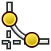 Fillet |
Crea un filete (esquina redondeada) o un chaflán (borde recto) entre dos líneas. | Dibuja un segmento de arco desde el centro, radio, ángulo inicial y ángulo final. | |
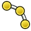 Arc by 3 points |
Crea un arco circular a partir de tres puntos que definen su circunferencia. | Dibuja un círculo a partir de su centro y su radio. | |
| Dibuja una elipse desde dos puntos de esquina. | Dibuja un rectángulo a partir de sus vértices opuestos. | ||
| Polygon | Dibuja un polígono regular a partir de un centro y un radio. | BSpline | Dibuja una curva B-Spline a partir de una serie de puntos. |
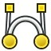 Bézier Curve |
Dibuja una curva de Bézier a partir de una serie de puntos fijados mediante clicks. | Cubic Bézier curve | Crea una curva de Bézier compuesta por segmentos cúbicos. |
| Inserta un solo punto. | Facebinder | Crea un nuevo objeto a partir de las caras seleccionadas en objetos existentes. | |
| Inserta una forma compuesta que representa una cadena de texto en un punto determinado del documento actual. | Hatch | Crea sombreados en las caras planas de un objeto seleccionado. | |
| Crea una anotación de varias líneas. | Crea una dimensión. | ||
| Label | Crea una etiqueta. | Annotation styles | Permite definir estilos que afectan a las propiedades visuales de objetos similares a anotaciones. |
| Mueve o copia objetos de una ubicación a otra. | Gira los objetos un cierto ángulo alrededor de un punto. | ||
| Escala objetos en relación con un punto. | Refleja objetos a través de una línea. | ||
| Desplaza un objeto a una cierta distancia. | Recorta, extiende o extruye un objeto. | ||
| Estira los objetos moviendo los puntos seleccionados. | Crea copias vinculadas de objetos. | ||
| Crea una matriz ortogonal a partir de un objeto seleccionado. | Crea una matriz a partir de un objeto seleccionado colocando copias a lo largo de una circunferencia. | ||
| Crea una matriz a partir de un objeto seleccionado colocando copias a lo largo de circunferencias concéntricas. | Crea una matriz a partir de un objeto seleccionado colocando copias a lo largo de una ruta. | ||
| Funciona de forma similar a una matriz de rutas, pero crea una matriz Link en lugar de una matriz normal. | 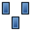 Point array |
Crea una matriz a partir de un objeto seleccionado colocando copias en los puntos de un compuesto de puntos. | |
| Point link array | Funciona de forma similar a una matriz de puntos, pero crea una matriz Link en lugar de una matriz normal. | Path twisted array | Crea copias retorcidas a lo largo de un camino. |
| Path linked twisted array | Crea copias entrelazadas y retorcidas a lo largo de una ruta. | Edit | Edita el modelo activo. |
| Subelement highlight | Resalta temporalmente los objetos seleccionados o los objetos base de los objetos seleccionados. | Join | Une Draft Lines y Draft Wires en un solo objeto. |
| Split | Divide una Draft Line o Draft Wire en un punto o borde especificado. | Convierte o une objetos en un objeto de nivel superior. | |
| Convierte o separa objetos en objetos de nivel inferior. | Crea un objeto 2D que es una vista aplanada de otro objeto. | ||
| Wire to B-spline | Convierte Draft Wires en Draft BSplines y viceversa. | Draft to Sketch | Convierte un objeto Borrador en un Boceto y viceversa. |
| Set slope | Pendientes seleccionadas Draft Lines o Draft Wires | Flip dimension | Gira el texto de la cota de la Draft Dimensions seleccionada 180° alrededor de la línea de cota. |
| Crea proyecciones 2D a partir de objetos seleccionados. | Snap lock | Habilita o deshabilita el ajuste global. | |
| Snap endpoint | Se ajusta a los vértices de los bordes. | Se ajusta al punto medio de los bordes. | |
| Snap center | Se ajusta al punto central de las caras y los bordes circulares. | Snap angle | Se ajusta a los puntos cardinales especiales en los bordes circulares, en múltiplos de 30° y 45°. |
| Se ajusta a la intersección de dos bordes. | Snap perpendicular | Se ajusta a los puntos perpendiculares de las caras y aristas. | |
| Snap extension | Se ajusta a una línea imaginaria que se extiende más allá de los extremos de los bordes rectos. | Snap parallel | Se ajusta a una línea imaginaria paralela a los bordes rectos. |
| Snap special | Se ajusta a puntos especiales definidos por el objeto. | Snap near | Se ajusta al punto más cercano en caras y aristas. |
| Snap ortho | Se ajusta a líneas imaginarias que cruzan el punto anterior en múltiplos de 45°. | Snap grid | Se ajusta a las intersecciones de las líneas de la cuadrícula. |
| Snap working plane | Los proyectos ajustan los puntos al actual. working plane | Snap dimensions | Muestra las dimensiones temporales X e Y. |
{kind=link}
{kind=link}
{kind=link}
{kind=link}
{kind=link}
{kind=link}
{kind=link}
{kind=link}
{kind=link}
{kind=link}
{kind=link}
{kind=link}
{kind=link}
{kind=link}
{kind=link}
{kind=link}
{kind=link}
{kind=link}
{kind=link}
{kind=link}
{kind=link}
{kind=link}
{kind=link}
{kind=link}
{kind=link}
{kind=link}
{kind=link}
{kind=link}
{kind=link}
{kind=link}
{kind=link}
{kind=link}
{kind=link}
{kind=link}
{kind=link}
Bocetador o editor de croquis
El  Sketcher Workbench contiene herramientas para crear y editar objetos 2D complejos, denominados bocetos. La geometría de los elementos que forman estos bocetos se puede referenciar y relacionar con precisión mediante el uso de restricciones. Estos croquis están pensados fundamentalmente como los bloques del flujo de trabajo de construcción de la geometría de PartDesign, pero resultan útiles en cualquier parte de FreeCAD.
Sketcher Workbench contiene herramientas para crear y editar objetos 2D complejos, denominados bocetos. La geometría de los elementos que forman estos bocetos se puede referenciar y relacionar con precisión mediante el uso de restricciones. Estos croquis están pensados fundamentalmente como los bloques del flujo de trabajo de construcción de la geometría de PartDesign, pero resultan útiles en cualquier parte de FreeCAD.
| Tool | Description | Tool | Description |
|---|---|---|---|
| Dibuja un punto. | Dibuja una línea poligonal formada por múltiples segmentos de recta. | ||
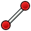 Line |
Dibuja un segmento de recta desde 2 puntos. | Arc | Dibuja un segmento de arco a partir del centro, radio, ángulo inicial y ángulo final. |
| Dibuja un segmento de arco desde dos puntos extremos y otro punto en la circunferencia. | Crea un arco de elipse. | ||
| Crea un arco de hipérbola. | Crea un arco de parábola. | ||
| Circle | Dibuja un círculo a partir del centro y el radio. | Dibuja un círculo que pasa por tres puntos dados del espacio. | |
| Dibuja una elipse mediante un punto central, un punto de radio mayor y un punto de radio menor. | Dibuja una elipse dado su diámetro mayor (2 puntos) y el radio menor (1 punto). | ||
| Dibuja un rectángulo desde 2 puntos opuestos. | Crea un rectángulo centrado a partir del primer click.. | ||
| Crea un rectángulo redondeado. | Dibuja un triángulo regular inscrito en un círculo geométrico de construcción. | ||
| Dibuja un cuadrado regular inscrito en un círculo de geometría constructiva. | Dibuja un pentágono regular inscrito en un círculo de geometría constructiva. | ||
| Dibuja un hexágono regular inscrito en un círculo de geometría constructiva. | Dibuja un heptágono regular inscrito en un círculo de geometría constructiva. | ||
| Dibuja un octágono regular inscrito en un círculo de geometría constructiva. | Crea un polígono regular. Se puede especificar el número de lados. | ||
| Crea una ranura. | Crea una ranura en forma de arco. | ||
| Crea una curva B-spline mediante puntos de control. | Crea una curva B-spline periódica (cerrada) mediante puntos de control. | ||
| Crea una curva B-spline mediante puntos de nodo. | Periodic B-spline by knots | Crea una curva B-spline periódica (cerrada) mediante puntos de nodo. | |
| Cambia el modo de construcción de un elemento. | En función de la selección actual, ofrece restricciones dimensionales/geométricas adecuadas. | ||
| Fija la distancia horizontal entre dos puntos o los extremos de una línea. | Fija la distancia vertical entre dos puntos o los extremos de una línea. | ||
| Fija la longitud de una línea, la distancia entre dos puntos, la distancia perpendicular de un punto a una línea, la distancia entre los bordes de dos círculos/arcos o entre un círculo/arco y una línea, o la longitud de un arco. | Fija el radio de los arcos y los círculos de peso B-spline, y el diámetro de los círculos. | ||
| Corrige el radio de círculos, arcos y círculos ponderados de B-spline. | Fija el diámetro de círculos y arcos. | ||
| Fija el ángulo entre dos aristas, el ángulo de una línea con el eje horizontal del boceto o el ángulo de apertura de un arco circular. | Restringe el elemento seleccionado estableciendo distancias verticales y horizontales relativas al origen, bloqueando así la ubicación de dicho elemento. | ||
| Crea una restricción de coincidencia entre puntos, fija puntos en aristas o ejes o crea una restricción concéntrica. | Restringe las líneas o pares de puntos a ser horizontales o verticales, según cuál esté más cerca de la alineación actual. | ||
| Restringe las líneas o elementos de polilínea seleccionados a una orientación horizontal verdadera. Se puede seleccionar más de un objeto antes de aplicar esta restricción. | Restringe las líneas o polilíneas seleccionadas a una orientación vertical estricta. Se pueden seleccionar varios objetos antes de aplicar esta restricción. | ||
| Obliga a que las líneas sean paralelas. | Restringe dos líneas a ser perpendiculares. | ||
| Crea una restricción de tangencia entre dos entidades seleccionadas o una restricción colineal entre dos segmentos de línea. | Restringe dos entidades seleccionadas para que sean iguales entre sí. Si se usa en círculos o arcos, sus radios se establecerán iguales. | ||
| Restringe dos puntos para que sean simétricos con respecto a una línea o eje, o con respecto a un tercer punto. | Bloquea los bordes en su lugar con una sola restricción. Está principalmente destinado a B-splines. | ||
| Crea un filete entre dos bordes no paralelos. | Crea un chaflán entre dos bordes no paralelos. | ||
| Recorta un borde en las intersecciones más cercanas con otros bordes. | Divide una arista mientras transfiere la mayoría de las restricciones. | ||
| Extiende o acorta una línea o un arco hasta una ubicación arbitraria, o hasta un borde o punto de destino. | Proyecta aristas y/o vértices pertenecientes a objetos fuera del boceto sobre el plano del boceto. | ||
| Proyecta las aristas y/o vértices pertenecientes a objetos fuera del boceto sobre el plano del boceto. | Intersecta las caras y/o aristas pertenecientes a objetos fuera del boceto con el plano del boceto. | ||
| Copia toda la geometría y las restricciones de otro boceto al boceto activo. | Selecciona el origen del boceto. | ||
| Selecciona el eje horizontal del boceto. | Selecciona el eje vertical del boceto. | ||
| Mueve u, opcionalmente, crea copias de los elementos seleccionados. | Gira o crea copias giradas de los elementos seleccionados. | ||
| Escala o, de forma opcional, crea copias escaladas de los elementos seleccionados. | Crea bordes equidistantes alrededor de los bordes seleccionados. | ||
| Crea copias simétricas de los elementos seleccionados. | Elimina la alineación de ejes de los bordes seleccionados reemplazando las restricciones Horizontal y Vertical con las restricciones Parallel y Perpendicular. |
{kind=link}
{kind=link}
{kind=link}
{kind=link}
Arquitectura
El  BIM Workbench (una combinación de los antiguos BIM, Native-IFC y Arch Workbench) está diseñado para el diseño arquitectónico y la planificación de la construcción, ofreciendo herramientas para crear y manipular elementos constructivos paramétricos como muros, losas, columnas, vigas, cubiertas y ventanas. Es compatible con IFC (Industry Foundation Classes) para un intercambio de datos fluido con otros programas BIM, facilitando la colaboración. Los usuarios pueden generar dibujos 2D detallados, anotaciones y documentación de construcción a partir de modelos 3D, integrándose estrechamente con el entorno de trabajo Draft para tareas como la creación de planos de planta, secciones y alzados.
BIM Workbench (una combinación de los antiguos BIM, Native-IFC y Arch Workbench) está diseñado para el diseño arquitectónico y la planificación de la construcción, ofreciendo herramientas para crear y manipular elementos constructivos paramétricos como muros, losas, columnas, vigas, cubiertas y ventanas. Es compatible con IFC (Industry Foundation Classes) para un intercambio de datos fluido con otros programas BIM, facilitando la colaboración. Los usuarios pueden generar dibujos 2D detallados, anotaciones y documentación de construcción a partir de modelos 3D, integrándose estrechamente con el entorno de trabajo Draft para tareas como la creación de planos de planta, secciones y alzados.
| Tool | Description | Tool | Description |
|---|---|---|---|
| Site | Crea un sitio que incluye los objetos seleccionados. | Building | Crea un edificio que incluye los objetos seleccionados. |
| Space | Crea un objeto de espacio en el documento. | Level | Crea un suelo que incluye los objetos seleccionados. |
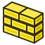 Wall |
Crea una pared desde cero o utilizando un objeto seleccionado como base. | 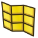 Curtain Wall |
Crea un muro cortina desde cero o utilizando un objeto seleccionado como base. |
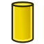 Column |
Crea una columna en una ubicación específica. | Beam | Crea un haz entre dos puntos. |
| Slab | Crea una losa a partir de una forma plana. | Door | Coloca una puerta en una ubicación determinada. |
| Crea una ventana utilizando un objeto seleccionado como base. | Crea una tubería. | ||
| Connector | Crea una conexión en esquina o en T entre 2 o 3 tuberías seleccionadas. | 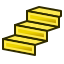 Stairs |
Crea un objeto de escaleras en el documento. |
| Roof | Crea un tejado inclinado a partir de una cara seleccionada. | Panel | Crea un objeto de panel a partir de un objeto 2D seleccionado. |
| Frame | Crea un objeto de marco a partir de un diseño seleccionado. | Fence | Crea una valla a partir de la sección, el poste y el camino seleccionados. |
| Truss | Crea una estructura de celosía a partir de una línea seleccionada o desde cero. | Equipment | Crea un objeto de equipo o mueble. |
| Crea una barra de refuerzo basada en un boceto o una cara seleccionada. | Profile | Crea un perfil paramétrico 2D. | |
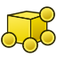 Box |
Crea una caja genérica. | Library | Abre la biblioteca de objetos. |
| Component | Agrega un componente arquitectónico indefinido. | Reference | Crea un objeto de referencia externa. |
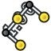 Aligned Dimension |
Crea una dimensión alineada. | 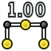 Horizontal Dimension |
Crea una dimensión horizontal. |
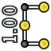 Vertical Dimension |
Crea una dimensión vertical. | Leader | Crea una polilínea con una flecha en su extremo. |
| Axis | Agrega una matriz de ejes de 1 dirección. | Axis System | Agrega un sistema de ejes compuesto por varios ejes. |
| Grid | Agrega un objeto similar a una cuadrícula. | Section Plane | Agrega un objeto de plano de sección. |
| Hatch | Crea un sombreado en la cara seleccionada. | View | Crea una vista de dibujo técnico a partir de un plano de sección o un objeto 2D. |
| Material | Establece o crea un material para el objeto seleccionado. | Crea diferentes tipos de cronogramas para recopilar datos del modelo. |
{kind=link}
{kind=link}
{kind=link}
{kind=link}
{kind=link}
{kind=link}
{kind=link}
{kind=link}
{kind=link}
{kind=link}
{kind=link}
{kind=link}
{kind=link}
{kind=link}
{kind=link}
{kind=link}
{kind=link}
{kind=link}
{kind=link}
{kind=link}
{kind=link}
{kind=link}
{kind=link}
{kind=link}
{kind=link}
{kind=link}
{kind=link}
{kind=link}
{kind=link}
{kind=link}
{kind=link}
{kind=link}
{kind=link}
{kind=link}
Otros ambientes de trabajo incorporados
Aunque lo detallado anteriormente resume las herramientas más importantes de FreeCAD, hay muchos más entornos de trabajo disponibles, entre ellos:
- El TechDraw Workbench permite generar dibujos técnicos a partir de modelos 3D.
- El Mesh Workbench permite trabajar con mallas poligonales [1]. Si bien las mallas no son el tipo de geometría preferido en FreeCAD debido a su falta de precisión y compatibilidad con curvas, siguen teniendo muchas aplicaciones y son totalmente compatibles con FreeCAD. El Mesh Workbench también ofrece diversas herramientas de conversión de piezas a mallas y de mallas a piezas.
- El Spreadsheet Workbench permite crear y manipular datos de hojas de cálculo, que se pueden extraer de los modelos de FreeCAD. Las celdas de las hojas de cálculo también se pueden referenciar en muchas áreas de FreeCAD, lo que permite utilizarlas como estructuras de datos maestras.
- El FEM Workbench se ocupa del Análisis de elementos finitos y permite realizar el preprocesamiento y el postprocesamiento de los análisis FEM y mostrar los resultados gráficamente.
Ambientes de trabajo externos
También existen otros entornos de trabajo muy útiles creados por miembros de la comunidad de FreeCAD. Si bien no se incluyen en una instalación estándar de FreeCAD, son fáciles de instalar como complementos. Todos ellos se encuentran referenciados en el repositorio FreeCAD-addons. Entre los más desarrollados se encuentran:
- El Drawing Dimensioning Workbench ofrece muchas herramientas nuevas para trabajar directamente en hojas de dibujo y permite añadir cotas, anotaciones y otros símbolos técnicos con gran control sobre su aspecto. El Drawing Dimensioning Workbench ya no recibe mantenimiento.
- El Fasteners Workbench ofrece una amplia gama de objetos de fijación listos para insertar, como tornillos, pernos, varillas, arandelas y tuercas. Dispone de numerosas opciones y ajustes.
- El A2plus ofrece una serie de herramientas para montar y trabajar con ensamblajes.
Leer más